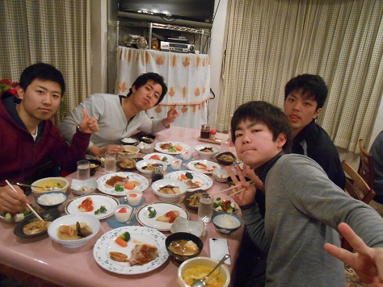
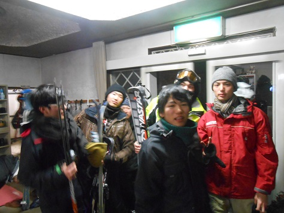

|
２月の１０（夜出発）～１３日でみんな大好き？スキー合宿に行ってまいりました！ 今回は上越国際スキー場に１、２年生合わせて計26名の参加者が集まってくれました。初心者も経験者も思うままに滑れて楽しい思い出の一つになったのではないでしょうか。大怪我をする人も出てこなかったので一安心です。スキー合宿担当の石丸君と佐野君お疲れ様でした！ 今回なんかいっぱい映ってた副務主任女子 一年男子による合宿直前の部室で前哨戦のスマブラ大会。 いざ出発！ 休憩なう。私が写真を向けると絶対顔を隠す柴田（一年・女子） 何故だ。 そんなこんなで宿到着。一面雪景色。 滑る前からお疲れ気味。バスで６～７時間だもんね･･･ 宿についた途端AKBのゲームを起動する長山くん（一年・男子） 推しメンは大島優子 卒業したけど(笑) 休んでいる暇はありません！さっそくスキー場へ！ スキー場到着と同時に現れた意味の分からない人。やしけん（二年・男子）今回は体張りまくってくれました。 いい景色です！ 
初心者指導開始。大塚（一年・男子 下の写真）ｖｓ大谷（一年・女子 上の写真） チャラい第三副将。 それまで普通に滑ってたのに突然コースアウト（ポールより左に行ってはいけない）し雑木林に激突寸前の柴田。どうしてこうなった。 
不審者再び。これでゲレンデ滑ってたやしけんにみなさん拍手を。 雪に埋まる長山くん。愛されてるね！ Revo平（主務）  満足がいくまで滑ってからのおいしい夕食タイム。 ナイターに行ってきます！ とても幻想的でした。終始テンションの高かった松本君（一年・男子） めっちゃスキーうめえ。 こんなところに彼女と二人で行きたいですね～（突然の死） ナイターから帰還後スロットる主務（手前）と郷原（二年・副務 奥）。 二日目朝ご飯。みんな低血圧でテンション↓ 二日目もじゃんじゃん滑りますよー スノボに初挑戦して無様に転びまくる広報をあざ笑う一年二人（中村・長山） 許すまじ。 そんな広報を慰めてくれた一年二人（平・関口） 出来男＆出来女 Revo平再び 二男でお昼ご飯。こんなんでも広報の顔面これが今回の中で一番写真うつり良かったので無理矢理採用。 頂上からの景色。綺麗でした！ 
ｷﾘｯ（｀・ω・´）image/※本当は膝を負傷しまくって悶えてた副務主任。 リフトに乗ってた雪だるま。ｶﾜﾕｽ。  二日目ナイター組 みんな元気だな･･･ 待機組はUNOで ソチ五輪を見ながらUNOタワーに勤しむ中村（この後タワーは崩壊しました） そして２月13日は主務・平一将くんのお誕生日でした！お祝いお祝い。 顔面シュークリームでFA その後シュークリームはスタッフがおいしくいただきました。 さて三日目最終日 朝から吹雪です本当にありがとうございました。 前が見えないﾜﾛｴﾅｲ。 あまりの悪天候に滑るのもそこそこにしてかまくら作り。 このクソ寒いのに冷たいクレープ食ってた一女。女子力★ 一女三人目菅谷（一年・男子）。 またしてもいじめに遭う長山くん。 宿に帰り帰宅準備。のはずが・・・ なぜか化粧大会に。杉山（一年・男子）は犠牲となったのだ。 
副務主任女子、名誉の負傷。スノボ怖い。 
帰路なう。みんな疲れ果ててます(笑) さて来週は春合宿です！体バキバキ！お金ない！東京も雪やばい！死ぬ！ (※写真へのコメントは全て管理人がしております。) |